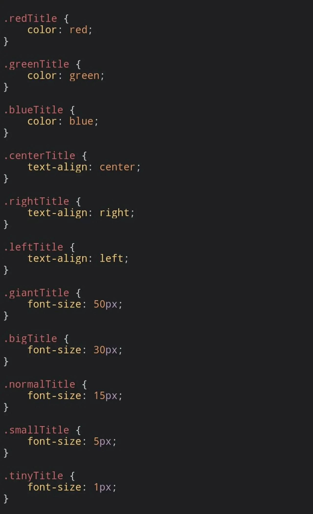

短答
CSS 类设置元素看起来怎样。元素类型才告诉解析器它的角色。
图中的样式表定义了一些以颜色、对齐和尺寸命名的类：red、green、center、giant 等等。这些规则改变颜色和字号。它们不创造标题。SEO 健康仍然寻找主题上的 H1。一个类名叫 giantTitle 的 div 是一个大的 div。截图里的像素大小是呈现规则的例子，不是本站推荐的尺寸。
定义
如果设计需要，可以保留用于颜色的类。当这一行是标题时，把类放在真正的标题上；当它是段落时，放在段落上。类名里写着“title”是给读 CSS 的人的提示。它不是大纲。避免把字号设得小到文字实际上消失。截图把非常小的尺寸包含在示例里。那不是要抄到产品名上的技术。
页面基础里包括什么
用元素表示角色，类只用于外观。
一个 H1 就应该是 h1 元素。导航应该是 nav 或锚点列表，而不是一组有颜色的 div。从 HTML 读大纲，然后才看样式表，只为了确认它有没有把大纲藏起来。图中的类名可以留在来源页上，作为呈现的图示。它们不是信息架构。

要检查什么
- 主题写成 h1 元素
- 类用于颜色或对齐，而不是代替大纲
- 导航是锚点，而不只是有颜色的 div
- 没有把产品名缩小到看不见的规则
- 从 HTML 阅读一条产品 URL 的大纲
一个结构示例
产品名是一个 class 为 giantTitle 的 div，口号是唯一的 h1，并且被设得更小。修复是让产品名成为 h1，如果设计仍要颜色，就在它上面留一个颜色类。获取到的大纲与人看见的页面一致。截图里的字号一个都没有被复制。
它不声称什么
正确的元素不保证排名或引用。
Mika Visibility 把它归到哪里
Mika Visibility 把标题、标题层级、语言和媒体基础归在 SEO 健康的内容与结构检查里。它们帮助页面被理解。它们不是 SEO 增长——增长问的是还缺什么覆盖——它们也不保证回答产品会引用这个页面。
样式表显示的是外观规则。角色仍然必须是 HTML 里的元素。
常见问题
CSS 类改变什么？
CSS 类设置元素看起来怎样。元素类型才告诉解析器它的角色。
什么应该承载角色？
用元素表示角色，类只用于外观。
正确的元素能保证排名吗？
正确的元素不保证排名或引用。
下一步
做一次结构化的 SEO + GEO 审计，查看健康发现、增长缺口和可以执行的蓝图。
更清晰的实体、答案、证据和上下文，会让页面更容易被理解与引用。任何回答产品中的结果都不作保证。